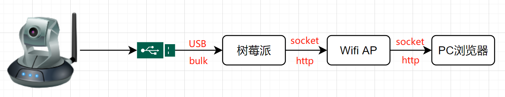

USB摄像头搭建IP网络摄像头
使用USB Camera搭建IP Camera，理解IP Camera工作原理
参考文档
简述
从USB摄像头获取视频帧(一张图片)，将视频帧传输到客户端(浏览器)，这里有很多成熟的传输技术，包括：HLS、RTSP、RTMP等。这些技术有一定的复杂性，各自有其适用场景，如果业务场景对实时性、性能没有太高要求，那显得有点牛刀杀鸡了。我们选择http的multipart类型，这是一个简单的方案，我们主要是理解架构：

IP Camera实践
cat /etc/pip.conf
[global] timeout = 600 index-url = https://pypi.tuna.tsinghua.edu.cn/simple extra-index-url = https://pypi.tuna.tsinghua.edu.cn/simple
sudo pip3 install flask
Flask是一个使用Python编写的轻量级Web应用程序框架。
sudo apt-get install cmake
sudo pip3 install opencv-python
安装时间挺长，挺住，编译源代码的时候好像只用了一个核，所以很慢，我这边安装了差不多一个半小时；
可以通过top命令查看情况
https://github.com/LowLevelOfLogic/RaspberryPi/tree/IP_Camera